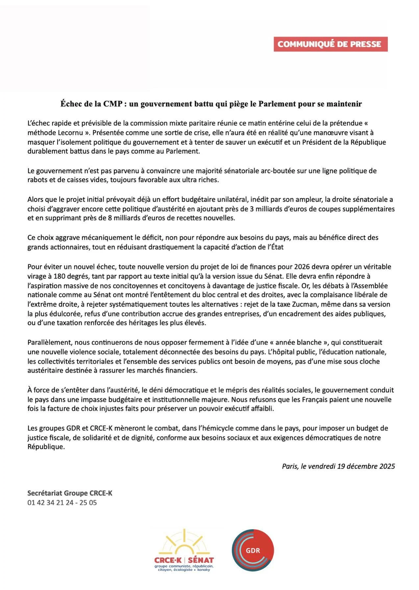

Communiqué parlementaire
Après l’échec de la commission mixte paritaire, les parlementaires communistes défendent la justice fiscale
Date de mise à jour indiquée par Facebook · 19 décembre 2025
Repères éditoriaux
Après l’échec de la commission mixte paritaire sur le budget, les groupes GDR et CRCE-K demandent qu’un nouveau texte réponde à l’exigence de justice fiscale. Le communiqué commun expose leur position.
Texte de la publication · Les députés communistes
Après l’échec de la CMP, toute nouvelle version du budget devra répondre à l’aspiration de nos concitoyens à davantage de justice fiscale.
Notre communiqué

Sources
Les députés communistes · publication relayée par le PCF 79 · bibliothèque Facebook · AR-0002-FB-00924
À lire aussi · Fabien Gay critique le projet de budget de Sébastien Lecornu